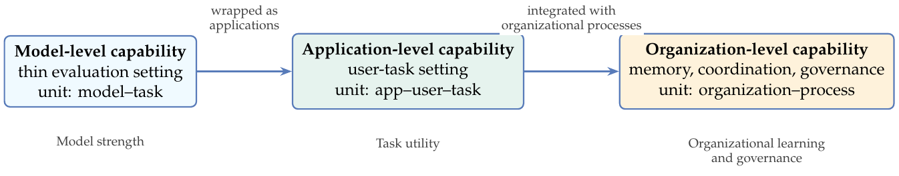
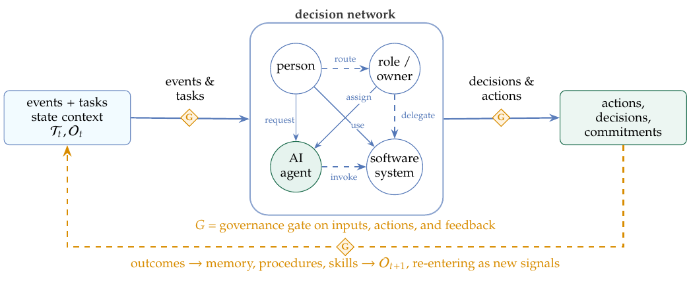

Recent AI progress has been measured mostly at the model or application level. Once these AI capabilities enter enterprises, governments, hospitals, laboratories, and other real organizations, however, the surrounding organization becomes the bottleneck. A capable model does not by itself know local knowledge, conventions, authority boundaries, accountability structures, task histories, or heterogeneous systems. Organizational intelligence (OI) is the system-level capability that emerges when AI agents are embedded in, constrained by, and—under governance conditions—able to drive reflection and evolution of a complex organization. It couples people, roles, processes, knowledge, data, systems, permissions, and accountability with agents that perceive, ground, remember, plan, act, verify, collaborate, and learn.
The organization, not the isolated model or task, is the right unit for evaluating and governing agentic AI: its most consequential effect may lie less in which tasks are automated than in how intelligence is organized, governed, and improved across an organization. The term has a long genealogy across sociology, management, information systems, collective intelligence, and multi-agent systems; the contribution is a synthesis for the era of large language model agents, not a priority claim. The paper models the organization as a dynamic information-processing and decision network, develops a capability-loop model of nested operational, reflective, and evolution loops, maps the capabilities to implementation components, and traces implications for organizational form and human-AI symbiosis. It then proposes how to evaluate OI, through capability signals and an L0–L5 maturity model whose higher levels demand not just broader autonomy but stronger governance entry conditions: least privilege, audit, independent verification, human control, and controlled evolution.
Introduction
Artificial intelligence's development can be read as a cumulative shift in the unit of intelligence: from model-level capability, to application-level capability, to organization-level capability. This should not be read as a move away from models: at all three units, the underlying intelligence may still be supplied by one or more model calls; what changes is the surrounding context, infrastructure, and governance around the model. This is an analytic framing, not a maturity scale or an autonomy taxonomy: it tracks the unit at which AI capability is organized and evaluated.
The first unit is model-level capability: deep neural networks and, more recently, large language models (LLMs) became increasingly capable at language understanding, code generation, multimodal recognition, mathematical reasoning, and other benchmarked tasks. Chain-of-thought prompting made visible the fact that multi-step reasoning can be elicited from sufficiently capable models under suitable prompting conditions (Wei et al., 2022). Here intelligence is treated primarily as a property of a model under a relatively thin evaluation setting: how large it is, how broadly it was trained, and how well it performs on standard tasks.
The second unit is application-level capability. Once general-purpose models became useful, they were wrapped into application-level settings: assistants, copilots, chat interfaces, customer-service agents, writing tools, and coding tools. Tool use and agentic prompting then turned these applications from single-turn responders into systems that plan, call tools, and act over multiple steps (Xi et al., 2023): coding agents that edit and run real software repositories, computer-use agents that operate other applications through their user interface, and enterprise copilots and autonomous agents deployed across productivity suites and management platforms. Here intelligence is treated as a callable service in a user-task context: what can this application do for this user in this task?
The third unit, and the central concern here, is organization-level capability. As many isolated AI applications enter the same firm, hospital, university, laboratory, or public agency, a different question appears: can these local capabilities combine into an intelligence of the organization as a whole? Can an AI system work not only for one prompt or one user, but continuously within a real organization, understanding local knowledge and conventions, remembering long-running matters, coordinating heterogeneous systems, respecting permissions and accountability, and improving from execution feedback? The central bottleneck is not only whether an agent can reason or call tools, but whether the right information, context, authority, memory, and feedback can reach the right human or artificial decision node at the right time, be turned into legitimate action, and return as organizational learning. Multi-agent and workflow systems are an important bridge, but they become organization-level only when connected to shared organizational state, memory, permissions, accountability, and cross-process feedback. At this unit, much of the capability lies outside the model call itself: in the execution substrate that supplies context, tools, memory, workflow policy, validation gates, human checkpoints, and audit trails.
The capability that can emerge at this third unit is Organizational Intelligence (OI). In the sense used here, OI is not a single model, product, or framework. It is the system-level capability formed when model capabilities and AI agents are embedded into a complex organization and made to operate under its knowledge, roles, processes, systems, permissions, and accountability mechanisms. OI shifts the unit of analysis from model performance in a task to the organization as a socio-technical system. The question is no longer only whether an agent can complete a task, but whether an organization as a whole becomes better at perceiving, deciding, acting, learning, and governing itself. This distinction matters: a deployment with many agents, tools, or automated workflows is still only a collection of point applications if it lacks shared task state, governed memory, permissioned action, accountable ownership, and feedback loops that improve the organization rather than only the next response. OI becomes a design and evaluation object: it asks what must be present before AI capability can be attributed to the organization as a whole.
The Organizational Gap
The need for OI follows from a recurring organizational failure: strong local intelligence does not guarantee organizational intelligence. In organizations, capability depends on whether the right information, context, authority, memory, and feedback reach the right decision and execution nodes at the right time. Many AI deployment failures are therefore not simply failures of model reasoning, but failures of organizational information flow. The organizational gap has at least five components.
- Knowledge-flow gap. Organizations run on private, situated knowledge—local policies, historical project decisions, clinical conventions, manufacturing parameters, undocumented practices, and interpersonal context—that a generic model trained on public data does not have. Much of this knowledge is tacit rather than explicit in the sense developed by Nonaka and Takeuchi (1995). The issue is not only that the model lacks local knowledge, but that relevant knowledge is distributed across people, documents, systems, routines, and tacit conventions, and often fails to reach the decision point where it is needed.
- Memory-continuity gap. Organizational work often spans weeks, months, or years. Without persistent, searchable, governable long-term memory, the organization cannot keep commitments, blockers, evidence, and decisions available across episodes; AI remains episodic rather than part of continuous work.
- Decision-action gap. Organizational action is not merely tool invocation or text production. It includes deciding what should be done next, setting priorities, allocating attention and resources, routing work across roles, coordinating people and systems, authorizing commitments, and changing organizational state. These actions are knowledge-dependent, but they are not reducible to knowledge retrieval: they require legitimate channels through which decisions become commitments and commitments become accountable execution. Tool and system calls are only one surface of this gap. The deeper issue is whether an AI system can participate in the organization's governed process of deciding, committing, executing, and revising action.
- Feedback-learning gap. Organizations learn when outcomes travel back into memory, routines, skills, and revised rules. Deployed model weights, however, are often static, and local task feedback is easily lost. If successes, failures, reviews, and exceptions cannot be converted into updated memory, reusable skills, local playbooks, and governed improvements to rules or models, AI remains an accelerant rather than a learning organizational participant.
- Authority-accountability gap. Information and action in organizations travel through authority relations. Every consequential action attaches to a permission, a role, and a responsibility. A model has no job position, authority boundary, or accountability relation by default. OI therefore requires permissions, audit trails, and explicit human-AI responsibility boundaries.
Together these gaps form the organizational gap: the distance between powerful point intelligence and an organization-level capability whose information flows, decision channels, memory, feedback, and accountability structures let it work coherently inside real organizational constraints.
Definition and Scope
Formally:
Organizational Intelligence is the system-level intelligent capability that emerges when model capabilities and AI agents move from benchmarks and point applications into complex organizational contexts. Its object is not an isolated task or user, but a dynamic organization constituted by people, roles, processes, knowledge, data, software systems, permissions, and accountability mechanisms. Its goal is to enable AI systems to continuously perceive task states, route relevant information to the right decision nodes, ground decisions in organizational knowledge, form long-term memory, plan and decide under organizational goals and constraints, turn decisions into authorized action across people and systems, verify results against the task's acceptance criteria before they commit, collaborate with humans and other agents, and improve from execution feedback under governance constraints.
The term is used in three related senses here: as a phenomenon or capability (the system-level intelligence of an organization after AI agents are embedded into its governed organizational processes), as a system (a concrete technical implementation), and as a level (the object evaluated by the maturity model). The capability is realized by, but not identical to, an OI system. Context disambiguates; the sense is flagged only where it matters.
Three things about this definition matter. OI is a form of organization of intelligence, not a technology; its unit of analysis is the organization, not the model; and its ultimate concern is reconstruction, because once intelligence can be produced, stored, invoked, coordinated, and improved in organized form, roles, workflows, boundaries, and even production relations all become redesignable. The novelty is not the phrase OI, nor the general idea of organizing agents; it is the claim that LLM agents make the organization itself the unit at which memory, action, evaluation, and governance must be designed. The paper develops this spine by modeling the organization as a dynamic information-and-decision network, formalizing its state, and then unpacking the nested feedback loops under governance that maintain and improve that state.
Contributions
The contributions are fivefold.
- It argues that the organization, not the isolated model or task, becomes the right unit of analysis once agentic AI spans memory, decision-action, evaluation, and governance in governed organizational processes.
- It characterizes the organization as an information-processing and decision network composed of eight coupled elements (people, roles, processes, knowledge, data, software systems, permissions, and accountability) that together form the organizational state.
- It maps the eight organizational capabilities—task perception, organizational grounding, long-term memory, tool and system execution, planning and decision-making, verification, controlled learning and evolution, and human-AI coordination—to the operational, reflective, and evolution loops, and shows which capabilities belong to which loop and governance tier.
- It maps these capabilities to implementation components—perception, connectivity, memory and knowledge, cognition, orchestration, learning, and governance—while relating them to recent work on agentic harnesses and execution scaffolds.
- It derives the consequences for organizational reconstruction: automation, organizational boundaries, production relations, human-AI symbiosis, self-improvement governance, evaluation, maturity levels, and open research.
The intended contribution is not another inventory of agent architectures, but a position-and-framework argument about the unit at which agentic AI must be designed and evaluated.
Research Object: The Organization as a Dynamic System
OI needs a precise object of analysis. The organization is modeled here not as an abstract group or a static org chart but as a dynamic socio-technical system whose people, roles, processes, knowledge, data, software systems, permissions, and accountability mechanisms together fix what it can perceive, decide, do, remember, and improve.
Organizations as Information-Processing Systems
The information-processing view of organizations is the source of this paper's spine: it is the lens under which the rest of this section models the organization as a state object and an information-and-decision network. Its premise is that organizations are themselves information-processing and decision systems. March and Simon (1958) describe organizations as boundedly rational systems in which decisions are constrained by attention, routines, and limited information. Cyert and March (1963) further emphasize standard operating procedures, problemistic search, coalitions, and organizational slack. These concepts map naturally to AI systems: agent workflows encode routines; reactive agent behavior resembles problemistic local search; redundancy and rollback paths function as engineering slack.
Galbraith (1974) gave the canonical information-processing view of organization design. The central design task is to match the information-processing requirements created by task uncertainty with the information-processing capacity of the organization. This gives OI its core engineering interpretation: AI deployment matters at the organization level when it changes how information is acquired, routed, interpreted, authorized, acted upon, and returned as feedback. Stronger model calls increase local capacity; OI requires redesigning the organizational information flows that connect that capacity to legitimate decision and action.
Organizational State: Eight Elements in One Object
The eight elements should not be read as an unordered checklist. They form a single organizational state. Let the state of an organization at time t be
where H is the set of people, R the set of roles and positions, P the set of processes, Kt organizational knowledge, Dt organizational data, S software systems, A permission relations, and G accountability and governance mechanisms. Kt and Dt are explicitly time-indexed; the other elements may be more stable in the short run but are also changeable over longer horizons.
This notation is an analytic decomposition, not a storage schema. Dt is the evidence and trace layer: transaction records, logs, messages, forms, sensor readings, and other data from which aspects of organizational state can be inferred. Ot is the organization-level object those traces describe: people, authority, routines, knowledge, systems, permissions, and accountability relations as they actually constrain future work. In a fully instrumented event-sourced system, Dt might be sufficient to reconstruct a large part of Ot; in ordinary organizations it remains partial, delayed, ambiguous, and permissioned. The distinction has a governance consequence the rest of the paper enforces: an audit log is evidence of a state transition, but until it is reviewed and accepted it remains provisional. The system may update its own working record automatically, but promoting any of it into authoritative, shared organizational knowledge Kt is a separate, reviewed act, not an automatic write.
The interpretation of each component is given below.
| State component | Role in OI |
|---|---|
| H: people | Carriers of tacit knowledge, sources of value judgment, collaborators, exception handlers, and ultimate accountability subjects. |
| R: roles and positions | Structured bundles of responsibility, authority, and expected competence; they anchor ownership and authorization decisions, especially in the route-and-authorize step where work is moved through appropriate channels and accountability is established. |
| P: processes | Standardized ways work is done; simultaneously a source of efficiency and a potential source of rigidity. |
| Kt: knowledge | Explicit and tacit organizational cognition; the local context that generic AI lacks. |
| Dt: data | Recorded traces and evidence used to infer, audit, and update organizational state; not identical to the state itself unless one assumes complete digital observability. |
| S: software systems | The digital organs of the organization: ERP, CRM, OA suites, repositories, databases, ticketing systems, and collaboration platforms. |
| A: permissions | Rules specifying who may see, change, approve, or execute what. |
| G: accountability and governance | Structures that specify who is responsible for consequences, how actions are traced, and how high-risk changes are authorized. |
Table: The eight coupled elements as components of the organizational state Ot.
The elements are mutually defining. Roles bind people, permissions, and accountability; processes connect roles, knowledge, and systems; data flow through systems and may become knowledge; permissions and accountability cut across all actions. A system that optimizes knowledge retrieval while ignoring permissions, or that calls tools without accountability, falls short of OI in the sense used here; this requirement is made precise later as a governance entry condition in the maturity model. The state vector and the eight-element table are thus two notations for one analytical object. Any implementation maintains a partial, permissioned, evolving representation of that state: task states, selected memory entries, audit records, and action evidence together form the substrate on which the decision network operates.
Information, Decision, and Change Dynamics
The state object becomes operational when it is viewed as an information-processing and decision network—the organizational reading of the information-processing tradition. Nodes are decision and execution units: people, roles, AI agents, and software systems. Edges are information and control flows: reporting, triggering, approval, delegation, escalation, tool invocation, and feedback. Node states include knowledge, memory, tasks, authority, current commitments, and unresolved exceptions.
On this view, OI appears in the quality, speed, robustness, and adaptiveness with which the network processes information and makes decisions. Galbraith (1974) makes the design challenge explicit: the organization must match information-processing capacity to task uncertainty. AI adds powerful nodes; OI requires designing the connections so that those nodes receive the right state, act through the right channels, and remain governable.
The main dynamics can be summarized as follows. Task dynamics are the life cycle of organizational matters. Let Tt be the set of active matters at time t; each carries a state, a goal, constraints, evidence, dependencies, and an owner, and moves through the network as it is created, routed, blocked, escalated, completed, reopened, and audited. State dynamics are the conditions that drift continuously, above all the knowledge Kt and data Dt, from inventory and project status to personnel load, system health, and customer situations. Event dynamics are the triggers that demand a response: an arriving payment, an approval, a threshold crossing, or a service incident. Feedback dynamics close the loop: verified outcomes update shared state, curated memory entries, local playbooks, reusable skills, and, under governance, changes to the system itself.

Analytical consequences. The formulation is used below as a set of constraints, not only as notation. First, a capability counts as organizational only when it reads or updates a governed representation of Ot—a partial, auditable snapshot of task states, memory, permissions, and evidence—rather than merely producing an isolated answer. Second, an action counts as an organizational state transition only when it moves through an authorized channel (determined by A and G), leaves auditable evidence in Dt, and is accepted by a verification gate. Third, learning and evolution are separated by what they change: updates to memory entries, task-state representations, skills, and playbooks are reflective learning under existing rules, while changes to processes, authority boundaries, role interfaces, validation gates, or system connectors alter the future operating conditions of the organization and belong to the evolution loop. These three constraints are the spine of the capability map, nested-loop governance model, reconstruction argument, and maturity levels developed in the rest of the paper.
Provenance and Theoretical Foundations
The research object rests on a longer tradition. Five foundations set the boundary for OI—the first three organizational and managerial, the last two computational—and a closing subsection separates what in it is genuinely new from what is not.
Organizational Intelligence Before LLMs
The phrase organizational intelligence has a substantial history. Wilensky (1967) used it in the title of Organizational Intelligence: Knowledge and Policy in Government and Industry, treating intelligence as the organizational process of acquiring, processing, interpreting, and transmitting knowledge needed for policy and decision-making. The key insight remains relevant: many failures are not failures of individual intelligence but failures of information flow, specialization, hierarchy, and power that prevent the right information from reaching the right decision node at the right time.
Subsequent management and information-systems work made the idea more operational. Huber (1990) analyzed how advanced information technology changes organizational design, intelligence, and decision-making. Matsuda (1992) formalized organizational intelligence as the coordination of human intelligence and machine intelligence, an early and direct anticipation of the human-AI symbiosis question. Glynn (1996) connected individual and organizational intelligence to innovation. Allee (1997) framed knowledge evolution as an expansion of organizational intelligence. Mendelson and Ziegler (1999) popularized organizational IQ. Halal (2002) treated organizational intelligence as a broader framework than knowledge management. Albrecht (2003) proposed a seven-dimensional managerial framework for diagnosing organizational intelligence.
Recent human-AI collaboration work also uses adjacent language. For example, Kolbjørnsrud (2024) frames the “intelligent organization” as a design problem for human-AI collaboration and explicitly treats organizational intelligence as something augmented by the interaction of humans and AI. This shows that the language of AI-era organizational intelligence is already in circulation; what is new is not the phrase but the unit of analysis and the governance-as-entry-condition constraints, which Kolbjørnsrud's role-and-work design framing does not fix.
Organizational Knowledge, Learning, and Memory
Knowledge and learning theory explains why OI cannot be reduced to automation. Senge (1990) treats the learning organization as a source of long-term competitiveness. Nonaka and Takeuchi (1995) distinguish tacit and explicit knowledge and propose the SECI spiral: socialization, externalization, combination, and internalization. OI asks whether AI can participate in this spiral: externalizing tacit practices from meetings, messages, code, and tickets into retrievable knowledge, and internalizing explicit norms into operational behavior. But knowledge conversion is not enough; learning must also be governed.
Argyris and Schön (1978) distinguish single-loop from double-loop learning. Single-loop learning corrects deviations under existing goals; double-loop learning questions the goals and norms themselves. Runtime agent improvement methods support single-loop improvement: Self-Refine (Madaan et al., 2023) revises an output within a single task, while Reflexion (Shinn et al., 2023) carries verbal lessons across episodes, but both correct behavior under fixed goals in the sense of Argyris and Schön (1978). Allowing AI systems to revise organizational goals or rules is closer to double-loop learning and introduces governance risk.
March (1991) frames organizational learning as a tension between exploration and exploitation. OI systems face the same tension: a system that only follows existing SOPs is efficient but rigid; a system that constantly experiments is adaptive but risky. Walsh and Ungson (1991) define organizational memory as the storage and retrieval of organizational history across multiple retention bins. Modern agent memory systems such as MemGPT (Packer et al., 2023), Generative Agents (Park et al., 2023), and MemoryBank (Zhong et al., 2024) can be read as partial technical realizations of such retention bins.
Boundaries, Governance, and Collective Intelligence
Transaction-cost economics explains why OI can affect organizational boundaries. Coase (1937) asks why firms exist when markets coordinate through prices; Williamson (1975) explains governance choices through asset specificity, uncertainty, and transaction frequency. If AI changes internal coordination costs and market transaction costs asymmetrically, it can change the make-or-buy boundary of the firm.
Collective intelligence research adds a different foundation. Surowiecki (2004) emphasizes diversity, independence, and decentralized aggregation. Woolley et al. (2010) find evidence for a collective-intelligence factor in human groups, driven less by maximum individual IQ than by social sensitivity and balanced participation. Malone (2018) describes organizations as “superminds” composed of people and computers. OI inherits the central lesson: the intelligence of a collective depends on connection and coordination, not merely on the strength of individual members. This principle carries directly into the organization-oriented MAS tradition, which asks how to design that coordination when artificial agents are part of the collective.
Organization-Oriented Multi-Agent Systems
Organizing artificial agents is itself a pre-LLM tradition in computer science (Wooldridge, 2009). The organization-oriented MAS literature built explicit models of agents grouped into roles, norms, and dependencies: the Agent-Group-Role meta-model and its organizational reading (Ferber and Gutknecht, 1998; Ferber et al., 2004), MOISE as an organizational model (Hannoun et al., 2000), surveys of paradigms from hierarchies to coalitions, teams, markets, and matrices (Horling and Lesser, 2004), and treatments of multi-agent architectures as organizational structures (Kolp et al., 2006; Dignum, 2009).
What changes with LLM agents is the cognitive substrate. Earlier agents were often symbolic and rule-bound; LLM agents have language understanding, tool use, memory, and broad task generality. Contemporary multi-agent frameworks such as CAMEL (Li et al., 2023), MetaGPT (Hong et al., 2024), ChatDev (Qian et al., 2024), AutoGen (Wu et al., 2024), and AgentVerse (Chen et al., 2024) reactivate organizational ideas under a much richer agent substrate (see Guo et al., 2024 for a survey).
Agentic Harnesses and Self-Improving Scaffolds
Recent agent research makes the extra-model execution layer increasingly explicit. Pan et al. (2026) call this layer a natural-language agent harness: a surrounding system that organizes model calls into tasks through instructions, tools, memory, artifacts, control flow, and evaluation. Code itself can serve as an agent harness, giving agents an executable substrate for reasoning, action, environment interaction, verification, and workflow composition (Ning et al., 2026). Lin et al. (2026) further frame harness engineering as an observability-driven process in which prompts, tools, middleware, memory, and evaluation hooks are automatically revised to improve coding-agent performance.
The relevance for OI is direct: agent capability depends not only on model weights or prompts but on the surrounding scaffold that determines what the model can see, which tools it can call, which artifacts it can modify, how failures are detected, and how improvements are retained. Multi-agent harness work makes the organizational analogy sharper still: Liu et al. (2026) synthesize role assignments, tool allocations, communication topologies, and coordination protocols for vulnerability discovery. These are technical analogues of roles, authority boundaries, communication channels, and task allocation in organizations.
For OI, the harness layer is only a start. An execution harness can coordinate model calls, tools, memory, and validation, but organizational intelligence also requires the embedding of that harness into real roles, knowledge, incentives, legal obligations, human-AI symbiosis, and accountability. Similarly, the possibility that AI systems may improve parts of their own development loop is not an OI definition but a governance problem for OI. Industry analysis from Anthropic describes current movement from chatbots to coding agents and autonomous agents, while explicitly treating full recursive self-improvement as not yet achieved and not inevitable (Anthropic, 2026). OI should treat self-improvement as governed learning and evolution rather than as an assumed endpoint.
What Is New, and What Is Not
The novelty claim is deliberately scoped. This paper does not present OI as a new label, nor agent organization as a new design problem. Its claim is that LLM agents make a different unit newly practical and newly urgent: the organization itself becomes the object whose memory, action, evaluation, and governance have to be designed together.
The phrase organizational intelligence already appears in Wilensky's account of knowledge and policy in government and industry, and later information-systems and management work developed related claims about how information technology, human-machine coordination, knowledge management, and organizational design affect collective intelligence (Wilensky, 1967; Huber, 1990; Matsuda, 1992; Halal, 2002; Albrecht, 2003). Computer science adds a separate pre-LLM lineage: organization-oriented MAS treated roles, norms, groups, dependencies, and communication structures as first-class design objects, while recent work on human-AI collaboration and agentic harnesses has made collaboration and the extra-model scaffold technically explicit (Kolbjørnsrud, 2024). Even self-improvement is not a new endpoint; it has long appeared in ultraintelligence and superintelligence debates (Good, 1966; Bostrom, 2014).
This paper therefore does not claim conceptual priority over these traditions. Its claim is narrower: LLM agents make it practical, and increasingly necessary, to treat the organization as the design and evaluation unit for AI systems. In that unit, memory is not just context length, action is not just tool use, collaboration is not just multi-agent messaging, and improvement is not just model update. They are organizational functions that have to be connected to roles, processes, authority, accountability, and feedback.
Two objections deserve direct answers. The first is that the synthesis is merely incremental: old organization theory relabeled over routine enterprise-AI engineering. But the framework commits to design constraints and falsifiable rules that none of its components supplies on its own:
- governance as an entry condition that caps maturity, not a score traded off against capability;
- a reviewed boundary between automatic memory updates and promotion into shared organizational knowledge;
- the separation of operational, reflective, and evolution loops by risk profile;
- and a concrete requirements list for organization-level benchmarks.
Each commitment is checkable against deployed systems, and each can fail. A relabeling offers no such test.
The second objection is that OI merely renames industry notions such as agentic AI or the digital workforce, or restates a capability milestone already named elsewhere—most directly OpenAI's reported five-level framework for tracking progress toward AGI, whose top level, “Organizations,” is described as AI that can do the work of an organization (Metz, 2024). These framings name product ambitions or a capability frontier; OI instead fixes a unit of analysis (the organization), constitutive constraints (the eight elements), an evaluation object (maturity under governance entry conditions), and a required co-evolution of capability and governance. The contrast is sharpest where the labels collide: the five-level reading places the organization at the top of a single system's capability ladder—AI that can do the work of an organization—whereas OI treats the organization as the unit in which human and AI intelligence must be organized and governed, makes governance an entry condition rather than a higher capability tier, and is augmentation-oriented rather than a substitution endpoint. An agentic-AI deployment, or a system that clears such a capability bar, can be assessed against OI criteria; the converse does not hold.
The synthesis offered here specifies OI as a capability of real organizations in which LLM agents with cognition, memory, tool use, collaboration, runtime learning, and execution scaffolds are embedded into the eight elements of organizational life. The integration is meant as a framework for research and system design, not as a claim of conceptual priority.
Capabilities and Feedback Loops
The organizational state and decision network say what OI acts on; the next question is what acts. The acting system is the OI system: the human and AI agents embedded in Ot, together with three shared working parts. Its memory layer is not introduced as a separate formal state variable; it is the governed, retrievable organization of past traces, decisions, cases, and skills that the system can reuse, whereas Dt denotes the broader recorded evidence layer. Its policies are the routing rules, applicable procedures, and validation and escalation gates that govern how work may be done and what must be checked before an action is taken. Its audit log is an append-only record of what was done, by whom, and on what evidence. All of this operates inside the permissions A and accountability rules G of the state it sits in. The audit log belongs to Dt; it supports accountability and later reconstruction, but it is not by itself the organizational change being audited.
Three nested loops
The OI system runs a cycle of organizational work, then wraps that cycle in two slower loops. The first learns within the current system; the second changes the conditions under which future work will run. These three loops are the spine of this section: they distinguish closing the work loop, improving work under existing rules, and changing the system that sets those rules. That separation carries most of the governance argument.

The innermost loop is operational (operation in the broad organizational sense of sensing, interpreting, deciding, and executing, not mere tool automation): it is one pass through the organization's decision and execution network that reads observable traces and a maintained representation of Ot, then helps produce updates to one or more components of Ot+1. These are network functions, not steps performed by one agent; different people, AI agents, software systems, and accountable owners may participate in different parts of the loop, and many matters run concurrently.
- Sense and update: read events, messages, system records, and human inputs from Dt, S, and Tt, then update a shared representation of what matters are active, blocked, handed off, or resolved.
- Interpret: align each matter with Kt and the system's memory layer so that signals are understood in local organizational context rather than as generic task descriptions.
- Route and authorize: move the matter through the appropriate human, agentic, system, or escalation channel, establishing ownership and authority where the organization requires them.
- Deliberate and decide: combine local knowledge, memory, constraints, and goals to choose what should be done next, including whether to act, ask, defer, escalate, or change the plan.
- Commit and execute: turn the decision into an authorized commitment, handoff, system operation, or other state-changing act across people and systems, within permissions A.
- Verify, audit, and feed back: check the result against acceptance criteria, record who did what on which evidence, and accept the state transition only after the change has passed the required gate.
That last step is what closes the operational loop. A pass that nothing checks, records, or feeds back is an action taken on trust rather than an organizational state transition.
Run by itself, this loop is no more than automation with extra steps. What makes it organizational intelligence is that two slower loops close around it. The reflective loop learns within the current system: it turns outcomes into better memory, reusable skills, task-state representations, and local playbooks. The evolution loop changes the system that future work runs on: policies, formal procedures, role interfaces, tool connectors, evaluation gates, and model- or harness-update pipelines. In the language of Argyris and Schön (1978), the reflective loop is mostly single-loop learning under existing goals and rules, while the evolution loop is the governed double-loop case in which those goals or rules can change. The three loops differ not only in what they touch but in how far a mistake propagates, which is why it is worth keeping them apart.
| Loop | Main function | Governance condition |
|---|---|---|
| Operational loop | Sense organizational signals, update shared task state, interpret local context, route or authorize work, make decisions, commit authorized action, and verify outcomes before they are accepted as organizational state transitions. | Must respect identity, permissions, audit, rollback, verification gates, and human control requirements. |
| Reflective loop | Convert outcomes into updated memory, reusable skills, local playbooks, and better task-state representations under existing goals and rules. | Requires provenance, review for shared knowledge, conflict handling, and forgetting rules. |
| Evolution loop | Change policies, formal procedures, role interfaces, tool connectors, evaluation gates, or model- and harness-update pipelines. | Requires stronger authorization, versioning, evaluation, staged rollout (canary release), rollback, and external audit for high-risk changes. |
Table: Three nested feedback loops in an OI system.
Concretely, the reflective loop edits memory entries, reusable skills, local playbooks, and task-state representations from observed outcomes. Such updates can be automated when they remain the system's private working record; promoting any of them into the organization's shared, authoritative knowledge Kt+1 is a different act with organizational consequences and should pass through review rather than happen silently. Likewise, a reflective loop may adjust local defaults or propose a procedure change, but changing policies of record, validation gates, role interfaces, connectors, evaluation criteria, or update pipelines belongs to the evolution loop. The pattern across the three loops is the real claim: the further a loop reaches from the operational core, the more a mistake propagates and the harder it is to reverse, so the governance bar rises with it. These outer loops are governed organizational change, not autonomous rights the system grants itself.
From loops to capabilities
The same three loops unfold into a capability map for the rest of this section. The operational loop requires perception, grounding, routing and authorization, planning and decision-making, tool execution, and verification, but these are capabilities of the organizational network rather than a serial prompt loop inside one agent. Routing and authorization is carried by the orchestration component together with the role and permission state (R, A), not by a separate capability subsection. Controlled learning spans the reflective loop; controlled evolution covers higher-risk changes to the system's future operating conditions. Human-AI coordination, with the governance it requires, cuts across all three. The master map below lines up each capability with its loop function, implementation component, representative methods, and evaluation signals.
| Capability | Loop function | Implementation component | Representative technical lines | Example evaluation signals |
|---|---|---|---|---|
| Continuous task perception | Sense / update | Perception | Event streams, state tracking, active triggers, attention scheduling. | Perception coverage and latency. |
| Organizational grounding | Interpret | Memory and knowledge | RAG, knowledge graphs, private knowledge bases, SECI externalization. | Grounding fidelity, hallucination resistance. |
| Long-term memory | Context | Memory and knowledge | Memory streams, MemGPT, MemoryBank, skill libraries. | Memory reuse rate, long-horizon consistency. |
| Planning and decision-making | Decide | Cognition and planning | Plan–act–observe–replan loops, hierarchical decomposition, compositional workflow planning. | Task completion, plan quality, exception recovery. |
| Tool and system execution | Commit | Connectivity | Tool calling, MCP, API integration, transactions and rollback. | Tool-call success, rollback correctness. |
| Verification and checking | Verify | Cognition; governance gate | LLM-as-judge, rubric and test gates, self-consistency, maker-checker separation. | Check precision and recall, false-accept rate; independent (non-author) verification required for consequential commits. |
| Controlled learning and evolution | Reflect / evolve | Learning and evolution | Reflexion, Self-Refine, skill consolidation, local playbook updates, harness or policy revision, controlled RLHF or constitutional updates. | Repeated-task learning curves; change evaluation and rollback outcomes. |
| Human-AI coordination | Cross-cutting | Orchestration; governance control plane | Multi-agent orchestration, coordination protocols, escalation paths, ownership anchors, human control points. | Collaboration reliability, escalation precision; permission violations and audit completeness as entry conditions. |
Table: Capability view of the OI feedback system. The table doubles as the structural map connecting the capabilities in this section with the implementation components and evaluation signals.
Continuous Task Perception
Continuous task perception is the sense-and-update function of the operational loop: it reads traces from Dt, S, and Tt and maintains the shared representation of Ot. The hard part is persistence, not retrieval. A real organization never goes quiet: events—messages, tickets, logs, approvals, incidents, and customer interactions—arrive continuously. Answering a question when asked is the easy case; what matters is tracking where each matter stands when no one is asking.
Three commitments follow. The system must be triggered by what happens in the organization, not only by a user's prompt. It must keep a structured, queryable account of each task, so that any agent or person can see where the matter stands, what blocks it, who owns it, and what evidence supports it. And because the signals always outnumber the attention available to handle them, it must schedule that attention, spending scarce compute and human review on the states that carry the most consequence.
Organizational Knowledge Grounding
Grounding is the interpret function of the operational loop: it aligns each matter with the organization's knowledge Kt so that events and tasks are read in local context rather than as generic descriptions. Retrieval-augmented generation (RAG) (Lewis et al., 2020) remains the baseline, but agentic settings make retrieval more iterative: agents can plan what to retrieve, revise queries, critique evidence, and assemble context over multiple steps, as emphasized by Self-RAG-style adaptive retrieval and critique (Asai et al., 2024) and agentic RAG surveys (Singh et al., 2025). Graph-structured retrieval adds another layer by organizing entities, relations, and community summaries rather than treating knowledge as flat document chunks (Edge et al., 2024). Enterprise retrieval benchmarks sharpen the requirement: HERB-style tasks require evidence assembly across documents, meetings, chat, code repositories, and URLs, plus the ability to recognize when available evidence is insufficient rather than force an answer (Choubey et al., 2025). Still, organizational grounding is broader than document search. It includes definitions that differ by department, tacit practices embedded in messages and meetings, versioned policies, role-specific norms, and authority-dependent interpretations.
The hardest part is that organizational knowledge is contextual and private. The same term may mean different things in different organizations; the same policy may be executed differently across units. OI needs provenance, freshness, permission tags, conflict resolution, and human review for knowledge updates.
Long-Term Memory
Long-term memory gives OI continuity only when it is distinguished from adjacent mechanisms. A long context window is the runtime working set available to a model during one episode; agent long-term memory persists across that agent's tasks; and organizational memory is shared and governed across people, agents, and systems. It is also distinct from Dt: data says what traces were recorded, while memory says what has been retained, indexed, summarized, connected, permissioned, and made available for future work. The design problem becomes an allocation problem: what belongs in the current window, what should be retrieved on demand, what should be consolidated into an agent's durable memory, what should remain as trace data, what should become shared organizational state, and what should be promoted to authoritative knowledge.
Long-context scaling enlarges the runtime working set, but it does not by itself create long-term or organizational memory. Methods such as LongRoPE (Ding et al., 2024) make it possible to place much larger documents, codebases, transcripts, or case histories into a model's input. Yet evaluations of long-context behavior show that a large nominal window is not equivalent to reliable use of all relevant information: models may use positions in the context unevenly (Liu et al., 2024), and synthetic long-context tests can overstate real task competence if they measure only simple retrieval rather than multi-hop tracing, aggregation, or reasoning under longer inputs (Hsieh et al., 2024). For OI, long context is valuable for bounded bundles such as a meeting transcript, contract folder, patient case file, or incident timeline, but it remains an episode-level resource.
Agent memory supplies the building blocks for the layer between the runtime window and the organization, but as parts of the allocation problem rather than a menu of systems. Allocation and movement are made architectural by MemGPT and pushed to production scale by Mem0 (Packer et al., 2023; Chhikara et al., 2025); CoALA separates episodic, semantic, and procedural stores (Sumers et al., 2024); retrieval, reinforcement, and forgetting are handled by recency–importance–relevance streams, forgetting mechanisms, and dynamic linking in Generative Agents, MemoryBank, and A-MEM (Park et al., 2023; Zhong et al., 2024; Xu et al., 2025); and Voyager treats reusable skills as a memory of capability (Wang et al., 2024). Mapped onto Ot, these populate the working set, an agent's durable memory, and the skill library, yet none yet provides the shared, permissioned, auditable organization-level memory OI requires.
OI extends this stack to organization-level memory, where the unit of continuity is no longer a single agent but a governed organization. Experience has to be shared across agents and people without violating permissions. Errors, contradictions, and stale entries have to be caught and corrected. The store has to honor privacy, retention, and the right to be forgotten, while still preserving enough provenance for audit and accountability. A mature OI memory is persistent, shared, permissioned, updatable, resource-aware, and auditable at once.
Memory Allocation and Maintained Organizational State
Memory allocation changes both design and evaluation because it determines which parts of the maintained representation of Ot are placed in the context window, retrieved on demand, persisted as memory, left as trace data Dt, or promoted to authoritative knowledge Kt. Here organizational state refers back to the eight-element state: it is not a new object, but the governed implementation-side representation of task state, selected traces, memory entries, permissions, provenance, and action evidence. OI systems should combine long contexts, retrieval, explicit memory policies, and durable state representation rather than treating any one mechanism as sufficient. They should also record what context was available to an agent when it made a recommendation or tool call, because later review depends not only on the final answer but on the evidence and memory snapshot from which that answer was produced.
The same boundary is being recognized in industry practice under the practitioner label company brain: a living, connected organizational context layer that captures decisions, messages, code, incidents, tickets, and commitments so that people and agents can act from shared context (Falconer, 2026; SOTA Sync, 2026; Hornof, 2026). These are practitioner and community sources rather than peer-reviewed research, so the label is used here only as independent corroboration. The architectural point is that data, documents, RAG indexes, and tool access are insufficient unless they are organized into a maintained representation of Ot with provenance, permissions, freshness, relationships, and action traces. That representation is the memory-and-state substrate of OI; it supports OI but is not the whole system, which also requires human-AI roles, planning, tool execution, feedback loops, governance, and accountability.
Planning and Decision-Making
Planning and decision-making is the deliberate-and-decide function of the operational loop: organizational work is rarely single-step. It requires decomposing goals, sequencing actions, satisfying constraints, handling uncertainty, and replanning when blocked. In agentic settings, planning is less a one-time search over intermediate thoughts than a plan–act–observe–replan loop: the system decomposes a goal, chooses tools and human checkpoints, observes the result of each step, updates task state, and revises the plan when assumptions fail. Recent evaluations make this shift concrete by stressing compositional knowledge work, realistic user interaction, policy constraints, long-horizon tool execution, and company-like digital tasks rather than isolated puzzle solving (Boisvert et al., 2024; Yao et al., 2024; Li et al., 2025; Xu et al., 2024).
The organizational bottlenecks are long-horizon reliability, exploration-exploitation balance, and constraint respect. Organizations often seek satisficing solutions under budgets, deadlines, compliance rules, stakeholder conflicts, and authority boundaries. EnterpriseArena makes this planning demand explicit by evaluating CFO-style allocation under partial observability, hard budgets, delayed effects, and regime shifts (Han et al., 2026). At OI scale, planning must distinguish reuse from exploration, routine execution from escalation, and ordinary decomposition from cases that need formal planning or human review.
Tool and System Execution
Tool and system execution is the commit-and-execute function of the operational loop, turning authorized decisions into changes to Ot within permissions A. At its base, tool use turns AI from a text generator into an actor. Early work established the reasoning-and-acting pattern and learned API use (Yao et al., 2023; Schick et al., 2023); the agentic shift since then is from one-off tool calls to long-horizon, multi-step execution across many real systems under user interaction, workflow, and policy constraints, which is what current benchmarks such as τ-bench and Tool Decathlon emphasize (Yao et al., 2024; Li et al., 2025).
In organizations, however, tool use must satisfy additional constraints. Calls must carry identity, authorization, audit context, and rollback semantics. A model that can call many systems is dangerous unless each call is checked against least privilege. The Model Context Protocol (MCP) is a promising standardization effort because it defines a reusable way to connect AI systems to tools and data sources (Anthropic, 2024). Complementary interoperability efforts such as the Agent2Agent (A2A) protocol target cross-agent communication rather than tool connectivity (Google, 2025). But protocol-level connectivity is only a substrate; production OI also requires authentication, multi-tenant permissions, transactional behavior, exception handling, and security hardening.
Verification and Checking
Acting is not the same as succeeding, so the operational loop closes with an explicit check. The design principle is separation: the component that produces an action should not be the one that grades it, because a model asked to judge its own output exhibits a measurable self-preference bias, systematically over-rating it (Zheng et al., 2023; Panickssery et al., 2024). An independent evaluator instead gates each pass against an explicit, written definition of done, and that check, not the actor's self-report, authorizes any change to organizational state. Self-critique methods such as Self-Refine and Reflexion are valuable for revision (Madaan et al., 2023; Shinn et al., 2023), but they do not by themselves meet this bar, since the critic and the author are the same system.
In an organization, verification is a governance gate, not only a quality check: it decides not only whether a result is good enough but whether it may commit to organizational state. Routine, low-risk actions can clear automated checks, while consequential ones demand stronger evidence or human review, and the same maker-checker separation reappears at the orchestration layer. For state-changing work, the check should inspect executable postconditions and resulting system state rather than only a transcript or natural-language judgment; Agent-Diff points in this direction by evaluating enterprise API tasks with state-diff contracts (Pysklo et al., 2026). The signals that matter are check precision and recall—and, above all, the false-accept rate—since a verifier that waves through bad work is worse than none.
Controlled Learning and Evolution
What separates OI from static automation is controlled learning and evolution, but the two are not the same governance act. Reflective learning improves behavior within current goals and rules: Reflexion stores verbal self-reflections in memory (Shinn et al., 2023), Self-Refine critiques and revises its own output (Madaan et al., 2023), and STaR bootstraps reasoning from generated rationales (Zelikman et al., 2022). Controlled evolution changes the behavior policy or execution substrate itself: InstructGPT brought feedback-based alignment to industrial scale (Ouyang et al., 2022), and Constitutional AI drives self-critique from written principles (Bai et al., 2022).
These methods operate at different time scales. Runtime reflection and self-refinement improve memory, skills, and local playbooks without changing model weights or formal policy; alignment training and constitutional updates change model behavior at lower frequency and higher governance cost. Recent harness work extends the same point from model outputs to the execution substrate itself: prompts, tools, middleware, memory, workflow policy, evaluation hooks, and validation gates can all become objects of improvement (Pan et al., 2026; Ning et al., 2026; Lin et al., 2026). OI should mainly rely on governable runtime reflection for everyday improvement, while reserving changes to harness policy, role interfaces, validation gates, or model behavior for controlled evolution pipelines.
Controlled evolution is therefore broader than improving task competence. Some important changes are structural: removing process steps, consolidating or splitting roles, changing approval paths, altering interfaces between units, replacing a human handoff with a shared state channel, or redesigning a process for lower cost and higher throughput. Such changes may leave the underlying task skill unchanged while altering R, P, S, A, or G in Ot. They belong to the evolution loop because a mistake changes the future operating conditions of the organization rather than only the current task. These structural effects reappear in the discussion of organizational reconstruction.
Human-AI Coordination under Governance
The coordination capability asks how humans and many AI agents coordinate without dissolving authorization, contestability, or accountability.
Multi-agent LLM frameworks already encode roles, workflows, and communication protocols in software, differing mainly in what they emphasize: a software-company SOP in MetaGPT (Hong et al., 2024), a communicative development workflow in ChatDev (Qian et al., 2024), role-playing agent societies in CAMEL (Li et al., 2023), programmable agent conversations in AutoGen (Wu et al., 2024), and emergent collaboration in AgentVerse (Chen et al., 2024). Under far more capable agents, they revive the organization-oriented MAS ideas discussed earlier. In Ot terms, they specify communication edges among agent nodes but leave permissions A, accountability G, and shared task state largely implicit; OI coordination adds permissioned authority, accountable ownership, and shared state to those topologies.
The human side is the constraint. A system can have many agents and still fail as an organization if it sidelines human judgment, tacit knowledge, accountability, or contestability. Recent human-in-the-loop evaluations further show that escalation is itself a capability: agents should ask for help when uncertainty, risk, or missing authority warrants it, while avoiding unnecessary interruptions (Trinh et al., 2026). Collaboration runs inside a governance control plane of five functions—explicit values and red lines, least-privilege runtime authorization, immutable audit and owner binding, mandatory human review for high-risk decisions, and versioned, staged, reversible change. Here the narrower requirement is that collaboration preserve inspectable roles, calibrated escalation paths, and accountable commitments.
Two failure modes also accumulate quietly whenever loops run with little supervision. We call them intent debt, the widening gap between what a loop was set up to do and what it has gradually drifted into doing, and comprehension debt, the understanding people lose as unreviewed outputs keep shipping. Both are organizational, not merely technical. Left unpaid they convert autonomy into precisely the responsibility diffusion that governance exists to prevent.
Implementation Components
The eight capabilities—distinct from the eight state elements, which are what the system acts on—describe what an OI system must do; an implementation must also say what it is built from. The OI capability core sits within a decision network; it decomposes into six implementation components that realize the capabilities, cut through by a control plane of permissions, audit, verification, and human governance. The components group the capabilities into the parts that realize them. Whereas the dynamic network models the organization as the research object, these components instantiate the OI capability core that operates within such a network. Perception and state turn organizational signals into tracked task state; memory and knowledge hold retrievable experience, task histories, and grounded access to the organization's knowledge Kt, so that grounding and recall share one substrate; connectivity executes actions through permissioned, auditable, rollback-aware tool and system calls; cognition and planning carry planning and the reasoning side of verification; orchestration coordinates human and AI roles, workflows, and handoffs; and learning and evolution implement the two outer loops: reflective learning over memory, skills, and playbooks, and governed evolution over harnesses, policies, gates, and model-update pipelines.

Cutting across all of these components is a control plane: permissions, audit, privacy, human control, verification, and rollback. It is drawn as a control plane because these constraints must be enforced where actions are authorized, checked, committed, and learned from; they cannot be delegated to a single downstream compliance module. The mapping is deliberately many-to-one: grounding and memory share the knowledge substrate, while verification and human-AI coordination each appear both as core capabilities and as control-plane conditions. In OI, checking and governance are constitutive of the capability rather than bolted on afterward.
Organizational Reconstruction
OI matters because it can reshape organizational form, not only improve task efficiency. This section should therefore be read as a set of consequences of the eight-element state formulation and the decision-network view. Reconstruction means that the capability loops do not merely complete more tasks; at sufficient scope they change one or more coordinates of the organizational state:
That is, who does what, which processes exist, where knowledge and data reside, which systems execute work, who is authorized, and how consequences are governed. The claims below are mechanism-level hypotheses rather than settled empirical conclusions.
From RPA to APA
Robotic process automation (RPA) automates rule-based actions at the interface layer of existing information systems (van der Aalst et al., 2018). It works well when workflows are repetitive and well specified, but becomes brittle when tasks require judgment, replanning, or exception handling. Agentic process automation (APA), proposed in ProAgent (Ye et al., 2023), replaces some fixed rules with LLM agents that can plan, decide, and adapt under supervision. RPA and APA are useful process-level starting points, but they are not the formulation of OI. In the state notation, RPA mainly scripts parts of P through existing S; APA adds agentic cognition inside a workflow, but often leaves R, A, G, shared memory, and cross-process feedback implicit. OI begins when such automation is embedded into the organizational state itself: task state is shared, action is authorized, outcomes update governed memory or knowledge, and higher-risk changes pass through reflective or evolution loops rather than remaining local workflow optimizations.
Task Reconstruction
Automation does not simply replace jobs. The task-based framework of Acemoglu and Restrepo (2018, 2019) distinguishes a displacement effect, in which automation substitutes for tasks previously performed by labor, from a reinstatement effect, in which technology creates new tasks. Acemoglu and Restrepo (2022) link the balance between these effects to wage inequality. OI should be analyzed at the task level, but not with tasks detached from the organization: each role decomposes into tasks that can be automated, augmented, redesigned, or newly created, and each such change may alter H, R, P, A, and G together.
Management research reaches a similar conclusion. Daugherty and Wilson (2018) describe a "missing middle" between purely human and purely machine work, where humans train, explain, and sustain AI while AI augments human capabilities. Davenport and Kirby (2016) describe strategies through which workers complement automation. OI gives this middle ground a technical substrate: perception, memory, tool use, planning, and governance become the machine-side capabilities that make human-AI collaboration operational.
The practical bottleneck moves upward. When agents reduce the cost of drafting, coding, searching, and routine coordination, the scarce resource shifts from raw execution to organizational comprehension—the comprehension debt: specifying the right problem, interpreting local context, reviewing fast machine output, assigning responsibility, and deciding when an exception should change the rule. In loop terms, the operational loop accelerates first; the organizational question is whether reflective and evolution loops can keep role definitions, playbooks, authority, and accountability synchronized with that acceleration. OI does not merely add automation to existing jobs; it changes which parts of a job become rate-limiting.
Human-AI Symbiosis and Relations of Production
OI reopens the older problem of human-AI symbiosis, but the reason is organizational before it is ergonomic. Consequential organizational action requires authority, responsibility, and contestability that cannot be assigned to a model by default, so AI capability has to be embedded in human-AI arrangements that preserve accountable ownership while expanding memory, search, coordination, and execution capacity. Licklider (1960) framed interactive computing as a close partnership in which humans and computers contribute different strengths, and Engelbart (1962) treated augmentation as a system of people, artifacts, language, and methodology; within the organizational-intelligence lineage, Matsuda (1992) had already cast it as the coordination of human and machine intelligence. For OI, the symbiosis problem is therefore not only whether a human and an AI tool collaborate well on a single task, but whether an organization can preserve human agency, judgment, tacit knowledge, and responsibility while reorganizing work around AI-supported memory, search, coordination, and execution.
This requires a stronger design condition than keeping a human nominally "in the loop." A symbiotic OI system should make human roles more capable and more accountable, not leave people to approve opaque machine outputs. In organizational-state terms, symbiosis is a coordinated change to H, R, Kt, A, and G: human expertise and judgment must remain part of the state that constrains future work, not disappear into opaque memory or tool pipelines. Failure modes—deskilling, excessive dependency, invisible human repair work, managerial surveillance, responsibility displacement, and the gradual transfer of local expertise into systems that workers cannot inspect—are organizational, not merely ergonomic. Industry analysis of the progression toward more autonomous agents points to the same bottleneck migration described earlier (Anthropic, 2026): the human role shifts toward problem selection, direction setting, review, escalation, and institutional authorization. Three design consequences follow. Role redesign must specify which capabilities move to agents and which human ones must be preserved, trained, or upgraded; interfaces must support review, correction, appeal, and explanation rather than just fast approval; and the learning loop must benefit the whole human-AI collective, with the AI learning from human judgment while people gain situational awareness, reusable knowledge, and higher-level skills rather than losing them.
Once this symbiosis becomes institutional rather than occasional, it reaches relations of production: ownership, roles in production, division of labor, and distribution. Marx (1859) frames social change as a tension between productive forces and production relations. OI may become a productive force because it reorganizes the controllable elements of the organizational state—knowledge, data, software systems, agentic labor, permissions, and accountability—and can therefore change who controls intelligent labor, who benefits from productivity gains, who bears accountability, and whether workers are augmented or displaced. Following the classical political-economy distinction, three dimensions make this concrete. The first is ownership of the new means of production: organizational data, models, agents, and process knowledge become decisive productive assets, and concentrating them creates new asymmetries of power, including the surveillance dynamics that Zuboff (2019) analyzes. The second is control of the labor process: as task assignment, monitoring, and evaluation become AI-mediated, the same machinery can widen worker discretion or tighten algorithmic control. The third is distribution of the surplus: whether the gains accrue narrowly to whoever owns the intelligent assets or broadly to organizational members and society is a question of institutional design, consistent with the displacement-reinstatement balance of Acemoglu and Restrepo (2022).
This is a hypothesis, not an empirical finding. The outcome depends on design and institutions. OI can support augmentation, shared expertise, safer operations, and new work; it can also centralize control, monitor workers, and accelerate displacement. Technical architecture alone cannot answer the distributional question.
Boundaries and Organizational Form
Transaction-cost theory implies that firm boundaries depend on the relative costs of internal coordination and market transaction (Coase, 1937; Williamson, 1975). OI can reduce both. If it reduces internal coordination costs more, firms may internalize previously outsourced activities. If it reduces market search, contracting, and monitoring costs more, firms may become more networked and platform-like. The direction is not predetermined; what changes is the cost calculation behind organizational boundaries. In the state formulation, boundary change asks which knowledge, data, systems, permissions, and accountability relations are kept inside the organization and which are exposed through markets, platforms, or partner interfaces.
OI can be embedded into several different organizational forms, each using it differently. Algorithmic operating models and "AI factories" shift coordination from hierarchical approval chains to data-driven decision engines (Iansiti and Lakhani, 2020). Platform capitalism emphasizes ecosystems and data-mediated coordination (Srnicek, 2017). Supermind theory imagines organizations as people-and-computer collectives (Malone, 2018). OI can be read as the infrastructure that gives these forms a working nervous system. The deployment archetypes below turn this claim into a checklist that matches OI emphasis to organizational form and to the binding gap component.
Deployment Archetypes
The same capabilities do not enter every organization through the same door. The table below gives a design checklist for matching OI emphasis to organizational form rather than to an abstract enterprise average. These archetypes are non-exclusive design emphases, not a partition: an organization is matched to whichever constraint currently binds, and most real organizations mix archetypes across units and lifecycle stages. They are another way to read the organizational state: coordination-bound cases expose weak links among R, P, and S; knowledge-bound cases expose weak Kt and memory formation from Dt; governance-bound cases expose constraints in A and G; AI-native cases expose whether the new agentic parts of S can be governed before they sprawl. The first three differ in which components of the organizational gap dominate; AI-native denotes organizations whose binding constraint is governance of the agents themselves rather than integration with legacy structure.
| Archetype | Main organizational bottleneck | OI design emphasis |
|---|---|---|
| Coordination-bound | Functional, divisional, matrix, and platform forms: fragmentation across functions, units, projects, and middle platforms, with slow handoffs and weak capability reuse. | Cross-boundary orchestration, shared task state, cross-unit memory, dependency and priority tracking, and agent-callable capability interfaces. |
| Knowledge-bound | Owner-driven small firms and tacit-heavy professional firms: undocumented, person-held knowledge and weak process memory. | Capturing commitments from communication, externalized playbooks, risk reminders, and decision support. |
| Governance-bound | Hierarchical groups, public agencies, and process- or compliance-heavy bodies: long reporting chains, formalistic review, legal procedure, due-process obligations, and late risk discovery. | End-to-end process visibility, process evidence, explainable risk-based triage, appeal paths, and strict human authority for consequential or legal decisions. |
| AI-native | AI-first startups and agent-operated "service-as-software" firms built around agents from the start: the binding constraint is not legacy integration but governance of the agents themselves—agent sprawl, diffuse accountability, and uncontrolled self-modification. | Native role and permission design for human-agent teams, agent identity and audit, controlled evolution with rollback, and explicit human accountability anchors. |
Table: Four deployment archetypes for OI, consolidating legacy organizational forms and adding AI-native organizations.
Risk, Governance, and Ethics
The deeper AI is embedded in organizational operations, the more systemic its risks become. Governance is endogenous to OI and cannot be an external compliance layer. Each risk below is a failure mode of the spine, not a separate taxonomy: accountability and alignment threaten G and the organization's values; permissions, privacy, and memory threaten A and the governed memory substrate; cognitive and social risks threaten Kt and the diversity the reflective loop depends on; the Turing Trap concerns control of H, R, and the distribution of gains; and governance of self-improvement is the entry condition on the evolution loop. These consolidate into five operational controls, set out below.
Accountability
Responsibility becomes difficult when outcomes are jointly produced by humans and multiple AI agents. The response is not to assign responsibility to the model, but to require complete audit trails, explicit human-AI responsibility boundaries, and a clear human accountability owner, assigned ex ante by role, for consequential actions. AI can advise, execute, and document; it should not become a sink for responsibility.
Alignment and Values
Organizational agents must align with organizational goals and values, but those goals are often plural and conflicting. RLHF (Ouyang et al., 2022) and Constitutional AI (Bai et al., 2022) suggest model-alignment mechanisms. For OI, alignment also requires making the organization's values and decision principles explicit enough that agents can reason about them and auditors can check conformance. One approach is to externalize existing compliance policies, red lines, and decision frameworks into a queryable form that agents and verification gates can reference; this parallels the “organizational constitution” idea but grounds it in artifacts that organizations already maintain.
Permissions, Privacy, and Memory
Least privilege is the central permission principle. Each agent should receive only the minimum rights necessary for its current role and task, and each system call should carry an authorization context. But privacy is not only an access-control problem: contextual-integrity failures occur when information is technically accessible but used for the wrong purpose, role, recipient, or workflow context, as CI-Work makes measurable in enterprise information-use tasks (Fu et al., 2026). Organizational memory adds a second tension. Remembering more improves continuity, while privacy, confidentiality, data retention, and the right to be forgotten require selective deletion and access control. Memory entries therefore need permission labels, provenance, retention policies, purpose constraints, and reliable deletion or redaction mechanisms.
Cognitive and Social Risks
OI can damage organizational cognition. Automation bias can make humans over-trust AI. Single-loop optimization can lock an organization more efficiently into the wrong goals. Homogeneous agents built from the same base model can amplify groupthink, undermining the diversity and independence emphasized by collective-intelligence research (Surowiecki, 2004; Woolley et al., 2010). Long-horizon agent-security benchmarks expose adversarial threats that are specifically dangerous to organizational loops: task injection, intent hijacking, objective drift, and memory poisoning can corrupt the system while leaving surface-level outputs looking correct, and unsafe tool chaining can introduce silent failures that degrade organizational knowledge without triggering alerts (Jiang et al., 2026). Mitigations include heterogeneous models, adversarial review roles, independent evidence checks, memory-integrity checks, and periodic double-loop review; at the organizational level, these reinforce the independent-verification entry condition in the capability framework.
The Turing Trap
Brynjolfsson (2022) warns that AI development focused on imitating and replacing humans can concentrate wealth and power, whereas augmentation can broaden capability. OI can be used in either direction. The normative position here is augmentation-first rather than replacement-first: for each task, the design question is who benefits, who bears responsibility, and how human capability migrates.
This does not imply that all substitution is wrong. Dangerous, low-dignity, highly rule-bound tasks may be appropriate for automation. The claim is that substitution should be institutionally managed, with attention to distribution, accountability, and worker transition. Operationally, a decision to substitute rather than augment should enter the governance control plane as a policy-level change—requiring explicit authorization, accountability assignment, and worker-transition review—rather than as a routine harness update; in maturity terms, such changes sit at the same governance tier as other consequential policy or model changes.
Governance of Self-Improvement
The possibility that AI systems could improve parts of their own development or execution environment is older than current LLM agents (Good, 1966; Bostrom, 2014), but recent agent systems make it more practical. Building on the reflective/evolution distinction—where the governance bar rises with a loop's reach—self-improvement in OI should be decomposed rather than treated as a single capability. Agents may improve local artifacts, memory entries, skills, and playbooks; they may also propose or help test changes to formal procedures, harness configurations, evaluation rubrics, or model-update pipelines. These changes differ sharply in reversibility and institutional consequence.
The boundary depends on what is at stake. Artifact-, memory-, and playbook-level improvement can be frequent, but still needs provenance and a correction path; this is reflective learning under existing rules. Harness-level improvement, such as changing prompts, tool policies, middleware, or coordination protocols, changes future behavior, so it should be versioned, evaluated, and rollback-aware. Formal procedure, policy, or model-level improvement can change goals, authority boundaries, or value trade-offs; it should therefore require explicit authorization, independent evaluation, and a human accountable for the result.
This framing differs from unqualified recursive self-improvement. OI does not assume that an AI system should autonomously improve itself without external control. It treats improvement as an organizational change process. The stronger the loop, the stronger the required governance, with concrete controls specified for each tier below.
Control-Plane Governance Functions
The five control-plane functions become operational only when decomposed into concrete specifications:
- Values: explicit policies, red lines, compliance principles, decision frameworks, and model-behavior constraints.
- Permissions: least privilege, dynamic authorization, and runtime checking for every system call.
- Accountability: immutable audit logs, owner binding, evidence trails, and human responsibility for consequential outcomes.
- Human control: mandatory human review for high-risk, irreversible, or value-sensitive decisions.
- Evolution: approval, versioning, staged rollout, evaluation, and rollback for formal procedure, policy, harness, or model changes.
These five functions make the structural controls operational. The cognitive and social risks above are handled through process design under Human control and Evolution rather than as a separate function, and memory deletion falls under Permissions. Capability and governance must co-evolve. Strong automation without these control-plane functions is not higher OI; it is fragile power.
Evaluation and Maturity
Why Evaluation Is Hard
Evaluating OI is harder than benchmarking a model because the unit of analysis is the organization. The capability is holistic: the eight capabilities have to work together rather than one at a time. It is contextual, so what counts as correct in one organization can be wrong in another. It is also longitudinal: value appears through continuity, learning, and adaptation over time, not in a single run.
Existing agent benchmarks provide partial signals for tool use, planning, memory, and grounding, but most remain centered on bounded task families with a single primary agent; recent exceptions are discussed below. OI requires benchmarks that simulate organizational environments with private knowledge, heterogeneous systems, permissions, long-running tasks, human checkpoints, and audit requirements. Such benchmarks have two jobs: measure capability gains and detect whether those gains were achieved by bypassing organizational constraints.
Existing Benchmarks and OI-Relevant Signals
Recent agent benchmarks move closer to organizational settings, although none fully measures OI. They are best read as partial probes of the OI capability stack rather than as interchangeable evidence for organization-level intelligence. Broader interactive environments such as AppWorld (Trivedi et al., 2024) and OSWorld (Xie et al., 2024) probe app-ecosystem and open-ended computer work. WorkArena++, τ-bench, Tool Decathlon, CRMArena-Pro, and Agent-Diff then stress capability substrates such as workflow composition, tool execution, user interaction, enterprise APIs, and state-changing actions. The closest OI signals are the benchmarks that add organization-like context: company sandboxes, heterogeneous enterprise evidence, contextual-integrity privacy, long-horizon resource allocation, human escalation, and long-horizon attack robustness. Read against the eight capabilities, these benchmarks cluster by capability rather than standing as interchangeable scores: AppWorld, OSWorld, and HERB probe perception and grounding; τ-bench, Tool Decathlon, and Agent-Diff probe tool execution and executable postconditions, the commit and verify steps of the operational loop; CI-Work probes contextual-integrity governance; EnterpriseArena probes long-horizon coherence; and AgentLAB probes adversarial robustness of the loop. Tellingly, none probes the reflective or evolution loops: organization-level learning and governed change remain essentially unmeasured. The following table summarizes these signals and their limits.
| Benchmark | What it tests | OI relevance and limitation |
|---|---|---|
| TheAgentCompany (Xu et al., 2024) | Consequential tasks in a simulated company environment. | Directly approximates digital-workplace agency, but lacks permission structures, accountability owners, and longitudinal memory across task episodes. |
| EnterpriseBench (Vishwakarma et al., 2025) | Enterprise tasks across software engineering, HR, finance, and administration with fragmented data and access-control hierarchies. | Stronger organization-like sandbox, but still synthetic and episodic, with limited longitudinal memory and governance beyond access control. |
| WorkArena++ (Boisvert et al., 2024) | Compositional planning and common knowledge-work tasks. | Tests workflow composition and reasoning, but only partially captures organizational memory, authority, and accountability. |
| τ-bench (Yao et al., 2024) | Tool-agent-user interaction in realistic domains. | Captures tool use under user interaction and policy constraints, but remains task-family centered. |
| CRMArena-Pro (Huang et al., 2025) | Business scenarios and interactions in CRM-like settings. | Useful for enterprise interaction and confidentiality signals, but not sufficient for organization-wide learning. |
| Tool Decathlon (Li et al., 2025) | Diverse, realistic, long-horizon tool execution across multiple applications. | Stresses long-horizon tool use and multi-application execution, but needs stronger organizational governance and memory evaluation. |
| HERB (Choubey et al., 2025) | Deep search over heterogeneous enterprise artifacts, including documents, meetings, Slack, GitHub, and URLs. | Strong signal for grounding and evidence assembly, but focuses on information access rather than permissioned action. |
| Agent-Diff (Pysklo et al., 2026) | Enterprise API tasks evaluated by state-diff contracts over sandboxed software-service replicas. | Tests whether actions actually change systems correctly, but remains tied to predefined API tasks and expected diffs. |
| CI-Work (Fu et al., 2026) | Contextual-integrity privacy in enterprise retrieval and information-use workflows. | Measures the utility–privacy trade-off directly, but covers a narrower information-flow slice of OI. |
| EnterpriseArena (Han et al., 2026) | Long-horizon CFO-style resource allocation under partial observability, budgets, delayed effects, and changing regimes. | Probes strategic persistence and delayed consequences, but is domain-specific and simulator-based. |
Table: Recent agent benchmarks as partial OI evaluation signals.
For calibration, in TheAgentCompany's original release, the best agent completed 24.0% of tasks fully autonomously and scored 34.4% under partial-credit evaluation (Xu et al., 2024); EnterpriseBench similarly reports only 41.8% task completion for its strongest evaluated agents (Vishwakarma et al., 2025). These gaps indicate how far current agents remain from organization-level competence. Adjacent 2026 benchmarks expose missing dimensions that a true OI benchmark must add: CI-Work treats privacy as contextual information flow, HiL-Bench evaluates whether agents know when to ask humans for help, Agent-Diff checks whether actions actually produce the intended state changes, and AgentLAB evaluates long-horizon attacks such as task injection, objective drift, and memory poisoning (Fu et al., 2026; Trinh et al., 2026; Pysklo et al., 2026; Jiang et al., 2026). The following table turns these gaps into benchmark requirements. Success should not be measured only by task completion, but also by whether the system preserves responsibility, respects authority, changes systems correctly, and improves without corrupting organizational knowledge.
| Requirement | What it tests | Failure if omitted |
|---|---|---|
| Private organizational knowledge | Local policies, project history, tacit conventions, and role-specific meanings. | The benchmark reduces to public web or generic office tasks. |
| Roles and permissions | Identity, authority, least privilege, and tool-call authorization. | Agents can appear competent by acting outside legitimate authority. |
| Contextual integrity | Purpose, sender–recipient context, workflow context, and appropriate information use. | Agents can complete tasks while leaking or misusing sensitive information. |
| Long-running task state | Persistence of goals, blockers, evidence, and commitments across episodes. | One-shot completion hides memory and continuity failures. |
| Evidence coverage and abstention | Source-backed evidence assembly over heterogeneous artifacts, plus refusal when evidence is insufficient. | Retrieval success hides brittle grounding and hallucinated conclusions. |
| Executable postconditions | State-diff checks, transactional effects, rollback, and explicit definitions of done. | Transcript-level judging rewards plausible work that did not change the world correctly. |
| Human checkpoints | Review, calibrated escalation, override, and appeal for consequential steps. | Autonomy is rewarded even when responsibility becomes diffuse or humans are flooded. |
| Memory update and forgetting | Promotion of outcomes into shared memory, conflict handling, retention, and deletion. | Learning is unmeasured or silently pollutes organizational knowledge. |
| Adversarial and memory-security robustness | Task injection, objective drift, memory poisoning, and unsafe tool chaining. | Long-running agents can be steered or corrupted while appearing productive. |
| Audit and replay | Evidence trails, action logs, rollback, and post-hoc inspectability. | Failures cannot be attributed, corrected, or learned from safely. |
Table: Minimum requirements for organization-level OI benchmarks.
Capability Signals
The level of OI can be described along four scales: breadth (how many tasks, roles, and systems are covered), depth (how complex the tasks and decisions can be), coherence (how long the system can maintain state and intent), and improvement (how reliably feedback becomes better behavior). Candidate evaluation signals include task-state perception coverage and latency; grounding fidelity; evidence coverage and abstention quality; hallucination resistance; memory reuse rate; long-horizon consistency; tool-call success, state-diff success, and rollback correctness; planning quality; exception recovery; verification check precision and false-accept rate; collaboration reliability; and learning curves for repeated task families. Coordination also needs human-side signals: appropriate-escalation precision and recall, human override and rewrite rates, reviewer workload per task, and false-alarm rates at human checkpoints. Governance-side signals should be reported alongside them: contextual-integrity violations, permission-violation rates, audit completeness, memory-integrity failures, and adversarial attack success rates. Each capability maps to example signals. These metrics should be reported separately before being collapsed into a maturity judgment: perception coverage primarily informs breadth; planning quality and task completion inform depth; long-horizon consistency informs coherence; learning curves inform improvement. Audit completeness, permission-violation rates, and contextual-integrity violations are deliberately not scored on these scales; they act as governance entry conditions that cap maturity.
Maturity Model
These signals can be summarized through an L0–L5 maturity model in which higher levels require broader autonomy and stronger governance entry conditions. (This L0–L5 scale is a governance-gated maturity model for an organization, in the spirit of staged-autonomy ladders such as the SAE driving-automation levels. It should not be conflated with OpenAI's reported five-level AGI framework, whose Level 5, “Organizations,” names the capability frontier of a single AI system — AI that can do the work of an organization — rather than the governed maturity of a real organization (Metz, 2024). The numerals coincide; the object being measured does not.)
| Level | Name | Core characteristics | Human-AI relation; governance entry |
|---|---|---|---|
| L0 | No intelligence | Human work plus traditional software; automation limited to fixed scripts. | Humans judge everything. |
| L1 | Tool assistance | Point AI applications; stateless, single-user, request-driven assistance. | AI is a passive tool. |
| L2 | Task automation | A single agent can complete bounded tasks with limited tool use. | AI executes; humans review outputs; least-privilege tool access with action logging. |
| L3 | Process-level intelligence | Multi-agent or human-AI workflows complete end-to-end processes with grounding and memory. | Humans supervise key nodes; role-level permissions and audit trails. |
| L4 | Organization-level intelligence | Cross-process and cross-department coordination with shared memory, learning, and built-in governance. | Humans set goals and boundaries; cross-department memory controls, data-retention and forgetting policies, and incident response. |
| L5 | Adaptive reconstruction | The OI system can, under evolution-loop governance, propose and execute redesigns of the organization's own processes and structures. | Humans set values and boundaries; change approval, staged rollout, rollback, and post-change evaluation for self-redesign. |
Table: An L0–L5 maturity model for OI. The name of L4 refers to organization-wide operation across processes and departments, not to OI as a whole; lower levels are lower degrees of the same capability. The upper levels, L4 and L5, describe research targets rather than widely deployed systems.
The scoring rule above has a governance counterpart: governance is an entry condition, and weak permissions, audit, or human control should cap maturity. As minimum examples, L2 requires least-privilege tool permissions and logging of agent actions; L3 requires role-level permissions, human review at key checkpoints, and audit trails; L4 adds cross-department memory access controls, data-retention and forgetting policies, and incident response; L5 adds change approval, staged rollout, rollback, and post-change evaluation. These rules reconcile the definitional and graded readings of governance: the constitutive requirements of the eight elements determine whether a deployment counts as an OI system at all, while maturity measures how far the capability extends.
Open Research Questions
The framework points to four connected research programs.
- Measurement and benchmarks. OI needs measurable levels, comparable signals, and organization-level benchmarks that satisfy the requirements for OI benchmarking; otherwise maturity remains a metaphor.
- Memory and controlled learning. OI needs shared memory that is persistent, permissioned, conflict-resolving, pollution-resistant, and forgettable, with a clear boundary between reflective learning inside current rules and supervised double-loop changes to organizational rules.
- Reliability and hybrid collective intelligence. OI needs long-horizon planning, recovery, human-AI collaboration, and collective-intelligence measures that do not collapse into responsibility diffusion or the intent and comprehension debt of collaboration governance.
- Institutions, boundaries, and power. OI changes transaction costs, organizational form, and the distribution of control; institutional designs must use the capability while avoiding the concentration of power warned of by the Turing Trap.
Limitations
The framework offered here is conceptual and descriptive: the capability-loop model, state formulation, implementation-component mapping, and maturity levels require empirical validation through case studies, longitudinal evaluation, and quantitative refinement before they can be considered predictive. The literature base is weighted toward English-language organization theory and LLM-agent research, underrepresenting organizational traditions and local practices documented in other languages.
The technology is also moving quickly. System-level claims should be revisited as reasoning models, long-context systems, agent protocols, graph-based RAG, and tool ecosystems evolve. The governance requirements—least privilege, maker-checker verification, staged rollout and rollback, and governance as an entry condition—are argued from organizational principles and analogy to software-release practice, not demonstrated. Their necessity, sufficiency, and operational cost, including reviewer workload and the latency introduced by mandatory human checkpoints, remain open questions for the measurement and reliability programs of the research agenda.
Conclusion
Organizational intelligence names a shift in the unit of intelligence. As model capabilities move from benchmarks and point applications into real organizations, the central question becomes whether the organization itself becomes better at perceiving events, grounding action in local knowledge, remembering, using tools, planning, verifying results, collaborating, learning, and remaining accountable.
The resulting research agenda spans measurement and benchmarks, governable memory, controlled learning and evolution, reliable long-horizon and hybrid collective intelligence, and the institutional questions of organizational boundaries and power. These questions are design constraints for future OI systems, not afterthoughts.
The positive claim is that LLM agents provide a substrate for synthesizing older organizational, collective-intelligence, and multi-agent traditions into organization-level systems. But capability and governance must co-evolve. Whether this synthesis augments human capability or concentrates power remains an institutional choice, not a technical inevitability. The paper's central argument is that governance must be part of the capability itself, not an external compliance layer applied after autonomy is granted.
References
- Daron Acemoglu and Pascual Restrepo. The race between man and machine: Implications of technology for growth, factor shares, and employment. American Economic Review, 108(6):1488–1542, 2018. doi: 10.1257/aer.20160696.
- Daron Acemoglu and Pascual Restrepo. Automation and new tasks: How technology displaces and reinstates labor. Journal of Economic Perspectives, 33(2):3–30, 2019. doi: 10.1257/jep.33.2.3.
- Daron Acemoglu and Pascual Restrepo. Tasks, automation, and the rise in U.S. wage inequality. Econometrica, 90(5):1973–2016, 2022. doi: 10.3982/ECTA19815.
- Karl Albrecht. The Power of Minds at Work: Organizational Intelligence in Action. AMACOM, 2003.
- Verna Allee. The Knowledge Evolution: Expanding Organizational Intelligence. Butterworth-Heinemann, 1997.
- Anthropic. Introducing the model context protocol. Official announcement and documentation, 2024. URL https://www.anthropic.com/news/model-context-protocol.
- Anthropic. When AI builds itself. Anthropic Institute article, 2026. URL https://www.anthropic.com/institute/recursive-self-improvement. Accessed 2026-06-08.
- Chris Argyris and Donald A. Schön. Organizational Learning: A Theory of Action Perspective. Addison-Wesley, 1978.
- Akari Asai, Zeqiu Wu, Yizhong Wang, Avirup Sil, and Hannaneh Hajishirzi. Self-RAG: Learning to retrieve, generate, and critique through self-reflection. In International Conference on Learning Representations, 2024. URL https://openreview.net/forum?id=hSyW5go0v8.
- Yuntao Bai, Saurav Kadavath, Sandipan Kundu, et al. Constitutional AI: Harmlessness from AI feedback. arXiv preprint, 2022. URL https://arxiv.org/abs/2212.08073.
- Léo Boisvert, Megh Thakkar, Maxime Gasse, et al. WorkArena++: Towards compositional planning and reasoning-based common knowledge work tasks. arXiv preprint, 2024. URL https://arxiv.org/abs/2407.05291.
- Nick Bostrom. Superintelligence: Paths, Dangers, Strategies. Oxford University Press, 2014.
- Erik Brynjolfsson. The turing trap: The promise and peril of human-like artificial intelligence. Daedalus, 151(2):272–287, 2022. doi: 10.1162/daed_a_01915.
- Weize Chen, Yusheng Su, Jingwei Zuo, Cheng Yang, Chenfei Yuan, Chi-Min Chan, Heyang Yu, Yaxi Lu, Yi-Hsin Hung, Chen Qian, Yujia Qin, Xin Cong, Ruobing Xie, Zhiyuan Liu, Maosong Sun, and Jie Zhou. AgentVerse: Facilitating multi-agent collaboration and exploring emergent behaviors. In International Conference on Learning Representations, 2024. URL https://openreview.net/forum?id=EHg5GDnyq1.
- Prateek Chhikara, Dev Khant, Saket Aryan, Taranjeet Singh, and Deshraj Yadav. Mem0: Building production-ready AI agents with scalable long-term memory. arXiv preprint, 2025. URL https://arxiv.org/abs/2504.19413.
- Prafulla Kumar Choubey, Xiangyu Peng, Shilpa Bhagavath, Kung-Hsiang Huang, Caiming Xiong, and Chien-Sheng Wu. Benchmarking deep search over heterogeneous enterprise data. In Proceedings of the 2025 Conference on Empirical Methods in Natural Language Processing: Industry Track, pages 501–517, Suzhou, China, 2025. Association for Computational Linguistics. doi: 10.18653/v1/2025.emnlp-industry.34. URL https://aclanthology.org/2025.emnlp-industry.34/.
- Ronald H. Coase. The nature of the firm. Economica, 4(16):386–405, 1937. doi: 10.1111/j.1468-0335.1937.tb00002.x.
- Richard M. Cyert and James G. March. A Behavioral Theory of the Firm. Prentice-Hall, 1963.
- Paul R. Daugherty and H. James Wilson. Human + Machine: Reimagining Work in the Age of AI. Harvard Business Review Press, 2018.
- Thomas H. Davenport and Julia Kirby. Only Humans Need Apply: Winners and Losers in the Age of Smart Machines. Harper Business, 2016.
- Virginia Dignum, editor. Handbook of Research on Multi-Agent Systems: Semantics and Dynamics of Organizational Models. IGI Global, 2009. doi: 10.4018/978-1-60566-256-5.
- Yiran Ding, Li Lyna Zhang, Chengruidong Zhang, Yuanyuan Xu, Ning Shang, Jiahang Xu, Fan Yang, and Mao Yang. LongRoPE: Extending LLM context window beyond 2 million tokens. In Proceedings of the 41st International Conference on Machine Learning, volume 235 of Proceedings of Machine Learning Research, pages 11091–11104. PMLR, 2024. URL https://proceedings.mlr.press/v235/ding24i.html.
- Darren Edge, Ha Trinh, Newman Cheng, Joshua Bradley, Alex Chao, Apurva Mody, Steven Truitt, and Jonathan Larson. From local to global: A graph RAG approach to query-focused summarization. arXiv preprint, 2024. URL https://arxiv.org/abs/2404.16130.
- Douglas C. Engelbart. Augmenting human intellect: A conceptual framework. Technical Report AFOSR-3223, Stanford Research Institute, Menlo Park, CA, 1962.
- Falconer. The company brain: A competitive moat in the age of AI. Online guide, 2026. URL https://falconer.com/guides/company-brain-competitive-moat/. Accessed 2026-06-08.
- Jacques Ferber and Olivier Gutknecht. A meta-model for the analysis and design of organizations in multi-agent systems. In Proceedings of the International Conference on Multi-Agent Systems, 1998. doi: 10.1109/ICMAS.1998.699041.
- Jacques Ferber, Olivier Gutknecht, and Fabien Michel. From agents to organizations: An organizational view of multi-agent systems. In Agent-Oriented Software Engineering IV, volume 2935 of Lecture Notes in Computer Science, pages 214–230. Springer, 2004. doi: 10.1007/978-3-540-24620-6_15.
- Wenjie Fu, Xiaoting Qin, Jue Zhang, Qingwei Lin, Lukas Wutschitz, Robert Sim, Saravan Rajmohan, and Dongmei Zhang. CI-Work: Benchmarking contextual integrity in enterprise LLM agents. arXiv preprint, 2026. URL https://arxiv.org/abs/2604.21308. Accepted to ACL 2026 Industry Track.
- Jay R. Galbraith. Organization design: An information processing view. Interfaces, 4(3):28–36, 1974. doi: 10.1287/inte.4.3.28.
- Mary Ann Glynn. Innovative genius: A framework for relating individual and organizational intelligences to innovation. Academy of Management Review, 21(4):1081–1111, 1996. doi: 10.5465/amr.1996.9704071864.
- Irving John Good. Speculations concerning the first ultraintelligent machine. In Advances in Computers, volume 6, pages 31–88. Academic Press, 1966. doi: 10.1016/S0065-2458(08)60418-0.
- Google. Announcing the agent2agent protocol (A2A): A new era of agent interoperability. Google for Developers Blog, 2025. URL https://developers.googleblog.com/en/a2a-a-new-era-of-agent-interoperability/.
- Taicheng Guo, Xiuying Chen, Yaqi Wang, Ruidi Chang, Shichao Pei, Nitesh V. Chawla, Olaf Wiest, and Xiangliang Zhang. Large language model based multi-agents: A survey of progress and challenges. In Proceedings of the Thirty-Third International Joint Conference on Artificial Intelligence, pages 8048–8057. ijcai.org, 2024. URL https://www.ijcai.org/proceedings/2024/890.
- William E. Halal. Organizational intelligence: A broader framework for understanding knowledge. On the Horizon, 10(4), 2002. doi: 10.1108/oth.2002.27410dab.001. URL https://doi.org/10.1108/oth.2002.27410dab.001.
- Yi Han, Yan Wang, Lingfei Qian, et al. Can LLM agents be CFOs? benchmarking long-horizon resource allocation in an uncertain enterprise environment. arXiv preprint, 2026. URL https://arxiv.org/abs/2603.23638.
- Mahdi Hannoun, Olivier Boissier, Jaime Simão Sichman, and Claudette Sayettat. MOISE: An organizational model for multi-agent systems. In IBERAMIA-SBIA 2000, volume 1952 of Lecture Notes in Computer Science, pages 156–165. Springer, 2000. doi: 10.1007/3-540-44399-1_17.
- Sirui Hong, Mingchen Zhuge, Jonathan Chen, et al. MetaGPT: Meta programming for a multi-agent collaborative framework. In International Conference on Learning Representations, 2024.
- Bryan Horling and Victor Lesser. A survey of multi-agent organizational paradigms. The Knowledge Engineering Review, 19(4):281–316, 2004. doi: 10.1017/S0269888905000317.
- Hornof. Company brain. LLM Wiki concept note, 2026. URL https://github.com/hornof/llm-wiki/blob/main/concepts/company-brain.md. Accessed 2026-06-08.
- Cheng-Ping Hsieh, Simeng Sun, Samuel Kriman, Shantanu Acharya, Dima Rekesh, Fei Jia, Yang Zhang, and Boris Ginsburg. RULER: What's the real context size of your long-context language models? In Conference on Language Modeling, 2024.
- Kung-Hsiang Huang, Akshara Prabhakar, Onkar Thorat, et al. CRMArena-Pro: Holistic assessment of LLM agents across diverse business scenarios and interactions. arXiv preprint, 2025. URL https://arxiv.org/abs/2505.18878.
- George P. Huber. A theory of the effects of advanced information technologies on organizational design, intelligence, and decision making. Academy of Management Review, 15(1):47–71, 1990. doi: 10.5465/amr.1990.4308227.
- Marco Iansiti and Karim R. Lakhani. Competing in the Age of AI: Strategy and Leadership When Algorithms and Networks Run the World. Harvard Business Review Press, 2020.
- Tanqiu Jiang, Yuhui Wang, Jiacheng Liang, and Ting Wang. AgentLAB: Benchmarking LLM agents against long-horizon attacks. arXiv preprint, 2026. URL https://arxiv.org/abs/2602.16901.
- Vegard Kolbjørnsrud. Designing the intelligent organization: Six principles for human-AI collaboration. California Management Review, 66(2):44–64, 2024. doi: 10.1177/00081256231211020. URL https://doi.org/10.1177/00081256231211020.
- Manuel Kolp, Paolo Giorgini, and John Mylopoulos. Multi-agent architectures as organizational structures. Autonomous Agents and Multi-Agent Systems, 13(1):3–25, 2006. doi: 10.1007/s10458-006-5717-6.
- Patrick Lewis, Ethan Perez, Aleksandra Piktus, et al. Retrieval-augmented generation for knowledge-intensive NLP tasks. In Advances in Neural Information Processing Systems, 2020. URL https://proceedings.neurips.cc/paper/2020/hash/6b493230205f780e1bc26945df7481e5-Abstract.html.
- Guohao Li, Hasan Abed Al Kader Hammoud, Hani Itani, Dmitrii Khizbullin, and Bernard Ghanem. CAMEL: Communicative agents for “mind” exploration of large language model society. In Advances in Neural Information Processing Systems, 2023.
- Junlong Li, Wenshuo Zhao, Jian Zhao, et al. The tool decathlon: Benchmarking language agents for diverse, realistic, and long-horizon task execution. arXiv preprint, 2025. URL https://arxiv.org/abs/2510.25726.
- J. C. R. Licklider. Man-computer symbiosis. IRE Transactions on Human Factors in Electronics, HFE-1(1):4–11, 1960. doi: 10.1109/THFE2.1960.4503259.
- Jiahang Lin, Shichun Liu, Chengjun Pan, et al. Agentic harness engineering: Observability-driven automatic evolution of coding-agent harnesses. arXiv preprint, 2026. URL https://arxiv.org/abs/2604.25850.
- Hanzhi Liu, Chaofan Shou, Xiaonan Liu, et al. Synthesizing multi-agent harnesses for vulnerability discovery. arXiv preprint, 2026. URL https://arxiv.org/abs/2604.20801.
- Nelson F. Liu, Kevin Lin, John Hewitt, Ashwin Paranjape, Michele Bevilacqua, Fabio Petroni, and Percy Liang. Lost in the middle: How language models use long contexts. Transactions of the Association for Computational Linguistics, 12:157–173, 2024. doi: 10.1162/tacl_a_00638. URL https://aclanthology.org/2024.tacl-1.9/.
- Aman Madaan, Niket Tandon, Prakhar Gupta, et al. Self-refine: Iterative refinement with self-feedback. In Advances in Neural Information Processing Systems, 2023.
- Thomas W. Malone. Superminds: The Surprising Power of People and Computers Thinking Together. Little, Brown and Company, 2018.
- James G. March. Exploration and exploitation in organizational learning. Organization Science, 2(1):71–87, 1991. doi: 10.1287/orsc.2.1.71.
- James G. March and Herbert A. Simon. Organizations. John Wiley and Sons, 1958.
- Karl Marx. A Contribution to the Critique of Political Economy. Franz Duncker, 1859.
- Takehiko Matsuda. Organizational intelligence: Coordination of human intelligence and machine intelligence. In Economics and Cognitive Science, pages 171–180. Pergamon Press, 1992. doi: 10.1016/B978-0-08-041050-0.50021-2.
- Haim Mendelson and Johannes Ziegler. Survival of the Smartest: Managing Information for Rapid Action and World-Class Performance. John Wiley and Sons, 1999.
- Rachel Metz. OpenAI sets levels to track progress toward superintelligent AI. Bloomberg news report, 2024. URL https://www.bloomberg.com/news/articles/2024-07-11/openai-sets-levels-to-track-progress-toward-superintelligent-ai. Reports OpenAI's internal five-level framework for tracking progress toward AGI; Level 5 (“Organizations”) is described as AI that can do the work of an organization. Accessed 2026-06-08.
- Xuying Ning, Katherine Tieu, Dongqi Fu, et al. Code as agent harness. arXiv preprint, 2026. URL https://arxiv.org/abs/2605.18747.
- Ikujiro Nonaka and Hirotaka Takeuchi. The Knowledge-Creating Company. Oxford University Press, 1995.
- Long Ouyang, Jeff Wu, Xu Jiang, et al. Training language models to follow instructions with human feedback. In Advances in Neural Information Processing Systems, 2022.
- Charles Packer, Sarah Wooders, Kevin Lin, et al. MemGPT: Towards LLMs as operating systems. arXiv preprint, 2023. URL https://arxiv.org/abs/2310.08560.
- Linyue Pan, Lexiao Zou, Shuo Guo, Jingchen Ni, and Hai-Tao Zheng. Natural-language agent harnesses. arXiv preprint, 2026. URL https://arxiv.org/abs/2603.25723.
- Arjun Panickssery, Samuel R. Bowman, and Shi Feng. LLM evaluators recognize and favor their own generations. In Advances in Neural Information Processing Systems, 2024. URL http://papers.nips.cc/paper_files/paper/2024/hash/7f1f0218e45f5414c79c0679633e47bc-Abstract-Conference.html.
- Joon Sung Park, Joseph C. O'Brien, Carrie J. Cai, Meredith Ringel Morris, Percy Liang, and Michael S. Bernstein. Generative agents: Interactive simulacra of human behavior. In Proceedings of the 36th Annual ACM Symposium on User Interface Software and Technology, 2023. doi: 10.1145/3586183.3606763.
- Hubert M. Pysklo, Artem Zhuravel, and Patrick D. Watson. Agent-Diff: Benchmarking LLM agents on enterprise API tasks via code execution with state-diff-based evaluation. arXiv preprint, 2026. URL https://arxiv.org/abs/2602.11224.
- Chen Qian, Wei Liu, Hongzhang Liu, Nuo Chen, Yufan Dang, Jiahao Li, Cheng Yang, Weize Chen, Yusheng Su, Xin Cong, Juyuan Xu, Dahai Li, Zhiyuan Liu, and Maosong Sun. ChatDev: Communicative agents for software development. In Proceedings of the 62nd Annual Meeting of the Association for Computational Linguistics, pages 15174–15186. Association for Computational Linguistics, 2024. doi: 10.18653/v1/2024.acl-long.810. URL https://aclanthology.org/2024.acl-long.810/.
- Timo Schick, Jane Dwivedi-Yu, Roberto Dessì, et al. Toolformer: Language models can teach themselves to use tools. In Advances in Neural Information Processing Systems, 2023. URL http://papers.nips.cc/paper_files/paper/2023/hash/d842425e4bf79ba039352da0f658a906-Abstract-Conference.html.
- Peter M. Senge. The Fifth Discipline: The Art and Practice of the Learning Organization. Doubleday/Currency, 1990.
- Noah Shinn, Federico Cassano, Ashwin Gopinath, Karthik Narasimhan, and Shunyu Yao. Reflexion: Language agents with verbal reinforcement learning. In Advances in Neural Information Processing Systems, 2023. URL http://papers.nips.cc/paper_files/paper/2023/hash/1b44b878bb782e6954cd888628510e90-Abstract-Conference.html.
- Aditi Singh, Abul Ehtesham, Saket Kumar, and Tala Talaei Khoei. Agentic retrieval-augmented generation: A survey on agentic RAG. arXiv preprint, 2025. URL https://arxiv.org/abs/2501.09136.
- SOTA Sync. PolyDAO: Company brain. Online reader note, 2026. URL https://sotasync.com/reader/2026-06-04-polydao-company-brain/. Accessed 2026-06-08.
- Nick Srnicek. Platform Capitalism. Polity Press, 2017.
- Theodore R. Sumers, Shunyu Yao, Karthik Narasimhan, and Thomas L. Griffiths. Cognitive architectures for language agents. Transactions on Machine Learning Research, 2024. URL https://openreview.net/forum?id=1i6ZCvflQJ.
- James Surowiecki. The Wisdom of Crowds. Doubleday, 2004.
- Tu Trinh, Mohamed Elfeki, Guangze Luo, et al. HiL-Bench (human-in-loop benchmark): Do agents know when to ask for help? arXiv preprint, 2026. URL https://arxiv.org/abs/2604.09408.
- Harsh Trivedi, Tushar Khot, Mareike Hartmann, Ruskin Manku, Vinty Dong, Edward Li, Shashank Gupta, Ashish Sabharwal, and Niranjan Balasubramanian. Appworld: A controllable world of apps and people for benchmarking interactive coding agents. In Proceedings of the 62nd Annual Meeting of the Association for Computational Linguistics, pages 16022–16076. Association for Computational Linguistics, 2024. doi: 10.18653/v1/2024.acl-long.850. URL https://aclanthology.org/2024.acl-long.850/.
- Wil M. P. van der Aalst, Martin Bichler, and Armin Heinzl. Robotic process automation. Business and Information Systems Engineering, 60(4):269–272, 2018. doi: 10.1007/s12599-018-0542-4.
- Harsh Vishwakarma, Ankush Agarwal, Ojas Patil, Chaitanya Devaguptapu, and Mahesh Chandran. Can LLMs help you at work? a sandbox for evaluating LLM agents in enterprise environments. In Proceedings of the 2025 Conference on Empirical Methods in Natural Language Processing, pages 9167–9201, Suzhou, China, 2025. Association for Computational Linguistics. doi: 10.18653/v1/2025.emnlp-main.466. URL https://aclanthology.org/2025.emnlp-main.466/.
- James P. Walsh and Gerardo Rivera Ungson. Organizational memory. Academy of Management Review, 16(1):57–91, 1991. doi: 10.2307/258607.
- Guanzhi Wang, Yuqi Xie, Yunfan Jiang, et al. Voyager: An open-ended embodied agent with large language models. Transactions on Machine Learning Research, 2024.
- Jason Wei, Xuezhi Wang, Dale Schuurmans, et al. Chain-of-thought prompting elicits reasoning in large language models. In Advances in Neural Information Processing Systems, 2022. URL http://papers.nips.cc/paper_files/paper/2022/hash/9d5609613524ecf4f15af0f7b31abca4-Abstract-Conference.html.
- Harold L. Wilensky. Organizational Intelligence: Knowledge and Policy in Government and Industry. Basic Books, 1967.
- Oliver E. Williamson. Markets and Hierarchies: Analysis and Antitrust Implications. The Free Press, 1975.
- Michael Wooldridge. An Introduction to MultiAgent Systems. John Wiley and Sons, 2 edition, 2009.
- Anita Williams Woolley, Christopher F. Chabris, Alex Pentland, Nada Hashmi, and Thomas W. Malone. Evidence for a collective intelligence factor in the performance of human groups. Science, 330(6004):686–688, 2010. doi: 10.1126/science.1193147.
- Qingyun Wu, Gagan Bansal, Jieyu Zhang, et al. AutoGen: Enabling next-gen LLM applications via multi-agent conversation. In Proceedings of the First Conference on Language Modeling, 2024.
- Zhiheng Xi, Wenxiang Chen, Xin Guo, et al. The rise and potential of large language model based agents: A survey. arXiv preprint, 2023. URL https://arxiv.org/abs/2309.07864.
- Tianbao Xie, Danyang Zhang, Jixuan Chen, Xiaochuan Li, Siheng Zhao, Ruisheng Cao, et al. Osworld: Benchmarking multimodal agents for open-ended tasks in real computer environments. In Advances in Neural Information Processing Systems (NeurIPS), 2024. doi: 10.52202/079017-1650. URL https://doi.org/10.52202/079017-1650.
- Frank F. Xu, Yufan Song, Boxuan Li, et al. TheAgentCompany: Benchmarking LLM agents on consequential real world tasks. arXiv preprint, 2024. URL https://arxiv.org/abs/2412.14161.
- Wujiang Xu, Zujie Liang, Kai Mei, Hang Gao, Juntao Tan, and Yongfeng Zhang. A-MEM: Agentic memory for LLM agents. arXiv preprint, 2025. URL https://arxiv.org/abs/2502.12110.
- Shunyu Yao, Jeffrey Zhao, Dian Yu, et al. ReAct: Synergizing reasoning and acting in language models. In International Conference on Learning Representations, 2023. URL https://openreview.net/forum?id=WE_vluYUL-X.
- Shunyu Yao, Noah Shinn, Pedram Razavi, and Karthik Narasimhan. τ-bench: A benchmark for tool-agent-user interaction in real-world domains. arXiv preprint, 2024. URL https://arxiv.org/abs/2406.12045.
- Yining Ye, Xin Cong, Shizuo Tian, et al. ProAgent: From robotic process automation to agentic process automation. arXiv preprint, 2023. URL https://arxiv.org/abs/2311.10751.
- Eric Zelikman, Yuhuai Wu, Jesse Mu, and Noah D. Goodman. STaR: Bootstrapping reasoning with reasoning. In Advances in Neural Information Processing Systems, 2022.
- Lianmin Zheng, Wei-Lin Chiang, Ying Sheng, et al. Judging LLM-as-a-judge with MT-Bench and Chatbot Arena. In Advances in Neural Information Processing Systems, 2023.
- Wanjun Zhong, Lianghong Guo, Qiqi Gao, He Ye, and Yanlin Wang. MemoryBank: Enhancing large language models with long-term memory. In Proceedings of the AAAI Conference on Artificial Intelligence, 2024. doi: 10.1609/aaai.v38i17.29946.
- Shoshana Zuboff. The Age of Surveillance Capitalism: The Fight for a Human Future at the New Frontier of Power. PublicAffairs, 2019.